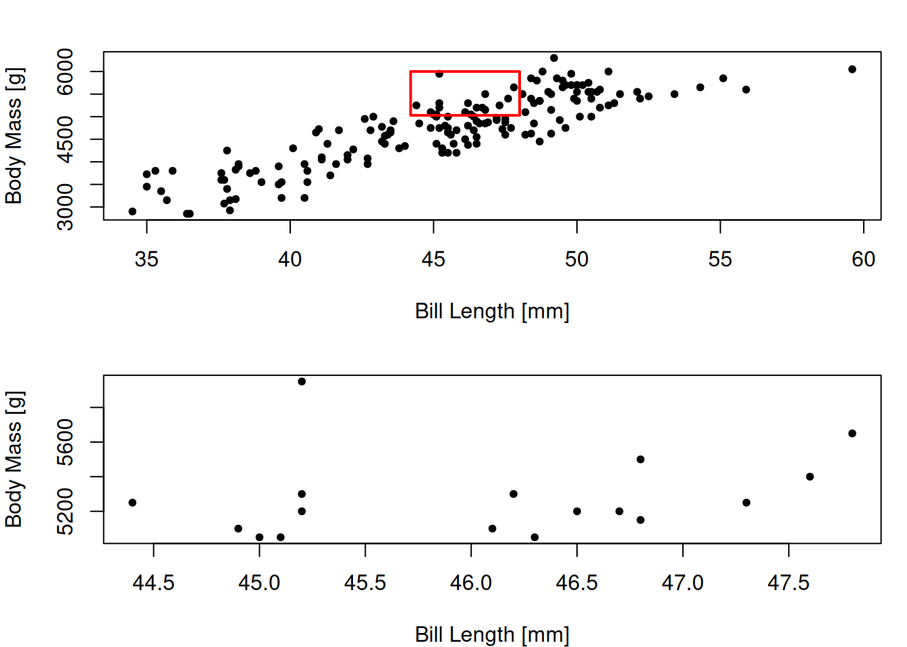
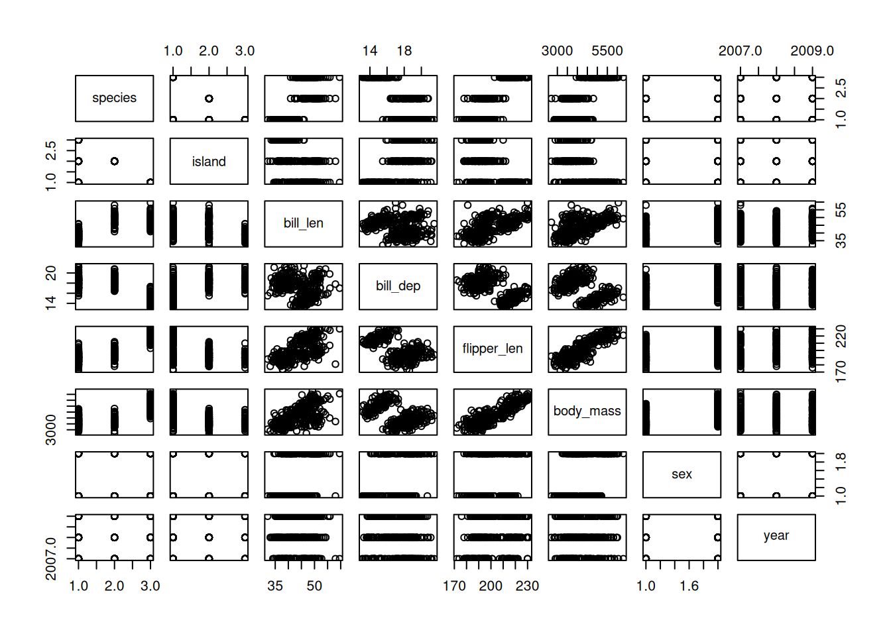
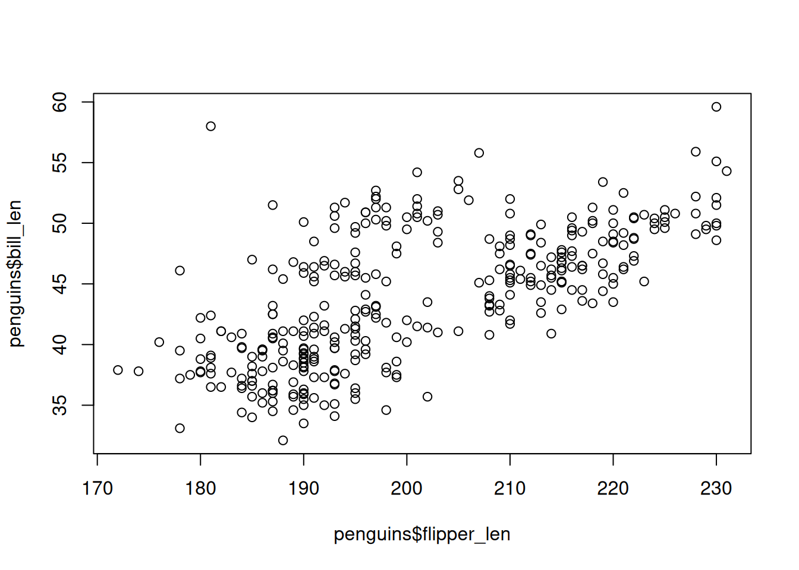
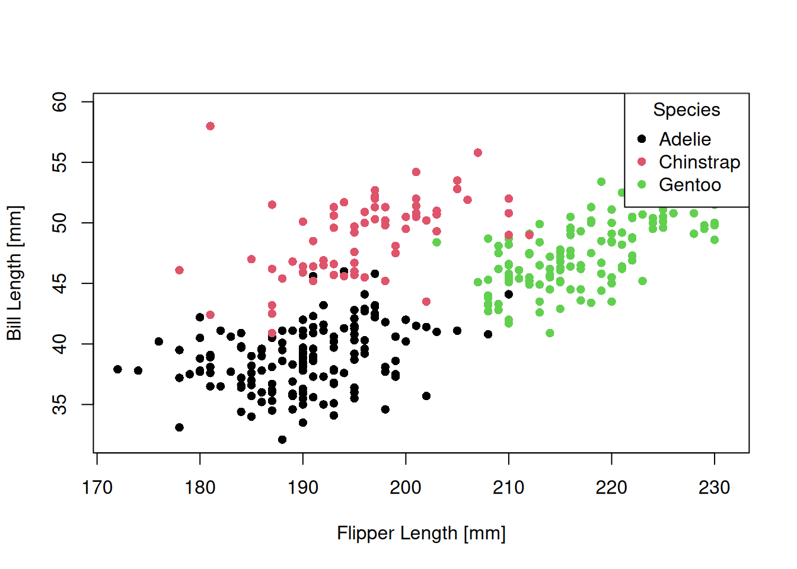

Merhabalar, blogun yeni yazısına hoş geldiniz.Takıldığınız ve anlamadığınız yerler olursa lütfen yorum yapmaya çekinmeyiniz.Ayrıca katkılarınızı ve eleştirilerinizi de bekliyorum. Keyifli okumalar.
Bu yazıda, R’da son yılların en sevilen veri setlerinden birisini kullanarak birçok temel işi yapmayı, yeni başlayanlar için yol gösterici, yardımcı bir rehber oluşturmayı hedefliyorum. R öğrenmeye yeni başlayan arkadaşım Rüveyda ile R çalışırken, bu gibi bir yazının yeni başlayanlar için oldukça faydalı olabileceğini düşündüm ve bu yazıyı yazmaya karar verdim. Önceki yazıların aksine ulaşılması daha kolay olan bir veri seti üzerinden çalışacağımız için, yazıyı okurken bir yandan da alıştırma yapmak daha kolay olacaktır. Bol bol alıştırma yapmanızı öneriyorum. Bazı yerlerde biraz ayrıntıya girmiş olabilirim, bu sizi korkutmasın, motivasyonunuzu kırmasın. Yalnızca devam edin ve diğer kısımlara bakın, sonra geri dönüp takıldığınız yerlere bakabilirsiniz.
“Palmer Penguins” veri seti, son dönemde veri bilimi ve istatistik alanında en çok kullanılan eğitim-uygulama veri setlerinden birisi. Öncelikle palmerpenguins paketi yayımlanmış, gördüğü ilginin ardından da bu veri seti, R 4.5.0 sürümüyle beraber R’ı yüklediğimiz zaman varsayılan olarak (base R ile) gelen {datasets} paketine dahil edilmiştir. Veriyi daha iyi tanımak ve yapılan örnek çalışmaları görmek için şu siteyi mutlaka incelemenizi öneririm.
Bugün bu veri setini kullanarak R’daki birçok temel analizi yapacağız. Bu yazıda yalnızca base R (R programlama dilini yüklediğimiz zaman varsayılan olarak gelen paketler) kullanacağız. Hiçbir paket yüklemeye gerek kalmadan, palmerpenguins verisini inceleyecek, veriyle oynayacak ve basit grafikler çizeceğiz. Buradaki amacım bir data.frame üzerinde çalışırken base R’a dair birçok temel noktayı ele alabilmek. Dolayısıyla göreceğimiz fonksiyonların hepsini, bir veriyi analiz ederken mutlaka kullanmanız gerekmiyor. Yalnızca o an gerekenleri, işinize yarayanları kullanmanız yeterli olacaktır.
Bir sonraki yazıda dplyr ve ggplot2 versiyonunu göreceğiz. :)
Henüz başlamamışken şu iki harika base R kılavuzunu buraya bırakayım:
Gördüğünüz gibi birçok satır ve sütundan oluşan bir veri tablosu. Öncesinde R konsolunun kaç tane değer yazdıracağını ayarlamadıysanız veriyi bu şekilde çağırmak, tüm veri tablosunu konsola yazdıracaktır. Bu durum, büyük veri tablolarında istenmeyen bir durum. Bundan kaçınmak için head() ve tail() fonksiyonlarını kullanabilir, verinin ilk 6 ve son 6 satırını görüntüleyebilirsiniz ancak öncelikle bir verimizin yapısını tanıyalım, sonrasında bu fonksiyonları kullanarak verinin bir alt kümesini görüntüleyelim.
Bu veri tablosunun hangi sınıfta yer aldığını, hangi veri yapısına sahip olduğunu görmek için class() fonksiyonunu kullanabiliriz.
class(penguins)
[1] "data.frame"
Gördüğünüz gibi bir data.frame. Yani satır (gözlem) ve sütunlardan (değişken) oluşan, tıpkı bir Excel tablosu gibi olan bir veri tablosu.
Şimdi de verinin yapısına daha ayrıntılı bakmak için str() fonksiyonunu kullanalım.
str(penguins)
'data.frame': 344 obs. of 8 variables:
$ species : Factor w/ 3 levels "Adelie","Chinstrap",..: 1 1 1 1 1 1 1 1 1 1 ...
$ island : Factor w/ 3 levels "Biscoe","Dream",..: 3 3 3 3 3 3 3 3 3 3 ...
$ bill_len : num 39.1 39.5 40.3 NA 36.7 39.3 38.9 39.2 34.1 42 ...
$ bill_dep : num 18.7 17.4 18 NA 19.3 20.6 17.8 19.6 18.1 20.2 ...
$ flipper_len: int 181 186 195 NA 193 190 181 195 193 190 ...
$ body_mass : int 3750 3800 3250 NA 3450 3650 3625 4675 3475 4250 ...
$ sex : Factor w/ 2 levels "female","male": 2 1 1 NA 1 2 1 2 NA NA ...
$ year : int 2007 2007 2007 2007 2007 2007 2007 2007 2007 2007 ...
Gördüğünüz gibi 344 gözlem ve 8 değişkenden oluşan bir veri tablosu. Verideki 1. (species) 2. (island) ve 3. (sex) değişken kategorik değişkenler için kullandığımız factor veri tipindeyken, 3. (bill_len) ve 4. değişken (bill_dep) numeric (double) ve 5. (flipper_len), 6. (body_mass) ve 8. (year) değişken integer veri tipinde. Double - numeric veri tipini, kompleks sayılar dışında kalan tüm sayılar için kullanabiliriz. Tam sayılar dışındaki sayılar için genellikle daha kullanışlı. Integer ise ismiyle müsemma tam sayılar için kullanılan bir veri tipi.
Başta karmaşık gelebilir ancak zamanla, alıştırma yaptıkça size çok doğal, çok kolay gelmeye başlayacak.
Data frame’ler, gördüğünüz gibi birbirinden farklı veri tipindeki değişkenleri tutabiliyor. Bu özelliğiyle içerisinde her şeyi tutabildiğimiz list() veri yapısında oldukça benziyor. Zaten 2 boyutlu yapısıyla matrix’lere benzese de data.frame’ler asıl olarak birer list’tir. Onu, matrix’lere benzeyen list’ler gibi düşünebilirsiniz. Bu yapısıyla matrix’ler gibi dikdörtgen şeklinde, düzenli bir şekilde veri tutabiliyor ama aynı zamanda list’ler gibi de oldukça esnek bir yapısı var. Veri analizinde kullanılmak için daha uygun veri yapıları.
Yine kafanız karışmış olabilir. Zamanla oturacak, merak etmeyin. Benim data.frame’lerin birer list olduğunu fark etmem oldukça uzun bir zaman aldı mesela. Ne kadar erken öğrenirseniz işlerinizi o kadar etkili yapabilirsiniz.
Şimdi verimizin ilk ve son 6 satırına bakabiliriz.
head(penguins)
species island bill_len bill_dep flipper_len body_mass sex year
1 Adelie Torgersen 39.1 18.7 181 3750 male 2007
2 Adelie Torgersen 39.5 17.4 186 3800 female 2007
3 Adelie Torgersen 40.3 18.0 195 3250 female 2007
4 Adelie Torgersen NA NA NA NA <NA> 2007
5 Adelie Torgersen 36.7 19.3 193 3450 female 2007
6 Adelie Torgersen 39.3 20.6 190 3650 male 2007
tail(penguins)
species island bill_len bill_dep flipper_len body_mass sex year
339 Chinstrap Dream 45.7 17.0 195 3650 female 2009
340 Chinstrap Dream 55.8 19.8 207 4000 male 2009
341 Chinstrap Dream 43.5 18.1 202 3400 female 2009
342 Chinstrap Dream 49.6 18.2 193 3775 male 2009
343 Chinstrap Dream 50.8 19.0 210 4100 male 2009
344 Chinstrap Dream 50.2 18.7 198 3775 female 2009
?head ya da help(head) fonksiyonlarını çalıştırarak dokümantasyonuna ulaşabilirsiniz. Burada bu fonksiyonların nasıl çalıştığı ve hangi argümanları alabileceği konusunda ayrıntılı bilgiye ulaşabilirsiniz. R’a ilk başlayanlar için dokümantasyonlar karmaşık gelebilir. Öncelikle anlamaya çalışın, eğer zorlanırsanız da Google kullanarak herhangi bir fonksiyon hakkında oldukça basit ve kullanışlı kaynaklara erişebilirsiniz. Birçok iyi yazılımcı ve R kullanıcısı, çok basit işlevleri bile unutup Google’den yardım alabiliyor. Hata yapmaktan ve yardım almaktan asla çekinmeyin. Hata yapmıyorsanız bir programlama dilini öğrenmiyorsunuz demektir. Tabi artık Google yerine ChatGPT gibi yapay dil modellerinden de faydalanabilirsiniz ama öğrenmenin ilk aşamalarında pek önermem.
Şimdi dokümantasyonda gördüğünüz n argümanını kullanarak kaç adet satır görüntülemek istediğinizi seçebilirsiniz.
head(penguins, n =10)
species island bill_len bill_dep flipper_len body_mass sex year
1 Adelie Torgersen 39.1 18.7 181 3750 male 2007
2 Adelie Torgersen 39.5 17.4 186 3800 female 2007
3 Adelie Torgersen 40.3 18.0 195 3250 female 2007
4 Adelie Torgersen NA NA NA NA <NA> 2007
5 Adelie Torgersen 36.7 19.3 193 3450 female 2007
6 Adelie Torgersen 39.3 20.6 190 3650 male 2007
7 Adelie Torgersen 38.9 17.8 181 3625 female 2007
8 Adelie Torgersen 39.2 19.6 195 4675 male 2007
9 Adelie Torgersen 34.1 18.1 193 3475 <NA> 2007
10 Adelie Torgersen 42.0 20.2 190 4250 <NA> 2007
Gördüğünüz gibi ilk ve son 10 satırı görebildik. n argümanının ikinci argüman olması dolayısıyla bu fonksiyonları doğrudan, head(penguins, 10) şeklinde de kullanabilirsiniz.
Benzer bir işlemi kare parantez, yani indeksleme (slicing), kullanarak da yapabiliriz. Burada, görüntülemek istediğimiz satır ve sütunları manuel olarak seçeceğiz. Virgülden önceki değer her zaman ilk boyutu, yani satırları; sonraki değer ise ikinci boyutu, yani sütunları seçmek için kullanılıyor.
str() fonksiyonuyla zaten bilgi edinmiştik ama tekrardan verimizin uzunluğuna, boyutlarına bir bakalım.
length(penguins)
[1] 8
Vektörlerin uzunluğunu öğrenmek için kullandığımız length() fonksiyonu bize data.frame hakkında yeterince bilgi vermedi. Eğer bir vektör ya da matrix ile çalışsaydık tüm elemanların sayısını öğrenebilirdik ama data.frame bize yalnızca sütun (değişken) sayısını verdi. Neden? Çünkü biraz önce de belirttiğim gibi data.frame’ler özünde sütunlardan - vektörlerden oluşan birer list’tir! Ama aynı zamanda da matrix gibi 2 boyutlu bir veridir. Dolayısıyla dim() fonksiyonuyla tıpkı matrix’lerde olduğu gibi verinin boyutlarına ulaşabiliriz.
dim(penguins)
[1] 344 8
Gördüğünüz gibi verimiz 344 satır (gözlem) ve 8 sütundan (değişken) oluşuyor.
head() fonksiyonunun yaptığı gibi ilk altı satırı görmek istediğimizi düşünelim.
penguins[1:6, ]
species island bill_len bill_dep flipper_len body_mass sex year
1 Adelie Torgersen 39.1 18.7 181 3750 male 2007
2 Adelie Torgersen 39.5 17.4 186 3800 female 2007
3 Adelie Torgersen 40.3 18.0 195 3250 female 2007
4 Adelie Torgersen NA NA NA NA <NA> 2007
5 Adelie Torgersen 36.7 19.3 193 3450 female 2007
6 Adelie Torgersen 39.3 20.6 190 3650 male 2007
Burada 1:6 ifadesi, 1’den 6’ya kadar sayılar üret demenin kolay yolu. seq() fonksiyonunun basitleştirilmiş hâli olarak düşünebilirsiniz.
1:6
[1] 1 2 3 4 5 6
Bakın 1’den 6’ya kadar olan sayılara bir vektör olarak eriştik. Bunu, yukarıdaki örnekteki gibi bir data.frame’in ilk 6 satırını görmek için kullanabiliriz.
Aynı vektörü c() ve seq() fonksiyonu ile de oluşturabiliriz. Ama bu örnek için daha uzun olacaktır.
penguins[c(1, 2, 3, 4, 5, 6), ]
species island bill_len bill_dep flipper_len body_mass sex year
1 Adelie Torgersen 39.1 18.7 181 3750 male 2007
2 Adelie Torgersen 39.5 17.4 186 3800 female 2007
3 Adelie Torgersen 40.3 18.0 195 3250 female 2007
4 Adelie Torgersen NA NA NA NA <NA> 2007
5 Adelie Torgersen 36.7 19.3 193 3450 female 2007
6 Adelie Torgersen 39.3 20.6 190 3650 male 2007
penguins[seq(1, 6), ]
species island bill_len bill_dep flipper_len body_mass sex year
1 Adelie Torgersen 39.1 18.7 181 3750 male 2007
2 Adelie Torgersen 39.5 17.4 186 3800 female 2007
3 Adelie Torgersen 40.3 18.0 195 3250 female 2007
4 Adelie Torgersen NA NA NA NA <NA> 2007
5 Adelie Torgersen 36.7 19.3 193 3450 female 2007
6 Adelie Torgersen 39.3 20.6 190 3650 male 2007
Sütun seçmek için kullandığımız indeksi önceden tanımladığımız bir vektör yardımıyla da yazabiliriz.
i <-1:6penguins[i, ]
species island bill_len bill_dep flipper_len body_mass sex year
1 Adelie Torgersen 39.1 18.7 181 3750 male 2007
2 Adelie Torgersen 39.5 17.4 186 3800 female 2007
3 Adelie Torgersen 40.3 18.0 195 3250 female 2007
4 Adelie Torgersen NA NA NA NA <NA> 2007
5 Adelie Torgersen 36.7 19.3 193 3450 female 2007
6 Adelie Torgersen 39.3 20.6 190 3650 male 2007
i’ye 1’den 6’ya kadar sayılardan oluşan bir vektör atadım ve onu da satır seçmek için kullandım.
Bu sefer de sütun indeksleri yerine sütun isimlerini kullandık. Sütun isimlerini " içerisinde, yani character olarak tanımladım ve birden fazla değer olduğu için c() (combine) fonksiyonuyla bir vektör oluşturdum. Başta karmaşık gelebilir ama mantığını öğrendikten, yeterli sayıda alıştırma yaptıktan sonra oldukça basitleşecektir.
Şimdi de verimizin özet istatistiklerine bir bakalım. Bunun için summary() fonksiyonunu kullanabiliriz.
summary(penguins)
species island bill_len bill_dep
Adelie :152 Biscoe :168 Min. :32.10 Min. :13.10
Chinstrap: 68 Dream :124 1st Qu.:39.23 1st Qu.:15.60
Gentoo :124 Torgersen: 52 Median :44.45 Median :17.30
Mean :43.92 Mean :17.15
3rd Qu.:48.50 3rd Qu.:18.70
Max. :59.60 Max. :21.50
NA's :2 NA's :2
flipper_len body_mass sex year
Min. :172.0 Min. :2700 female:165 Min. :2007
1st Qu.:190.0 1st Qu.:3550 male :168 1st Qu.:2007
Median :197.0 Median :4050 NA's : 11 Median :2008
Mean :200.9 Mean :4202 Mean :2008
3rd Qu.:213.0 3rd Qu.:4750 3rd Qu.:2009
Max. :231.0 Max. :6300 Max. :2009
NA's :2 NA's :2
summary() fonksiyonunu kullanarak her değer için özet istatistikleri görebiliyoruz. Eksik veri için kullanılan NA değerleri de dahil. Ayrıca factor değerlerimiz için bir frekans tablosu elde etmiş oluyoruz. Yani her bir kategoriden kaç adet olduğunu görebiliyoruz. Bunu yapmanın birden fazla yolu var ve bazıları daha kullanışlı. Bunlara da bir bakalım ancak öncelikle species değişkeni için kaç adet eşsiz (unique) değer olduğuna bakalım. Diğer kategorik değişkenler için de aynı yöntemi kullanabilirsiniz.
Dikkat edin burada list ve özellikle de data.frame’lerde kullanılan yeni bir operatörle karşılaştık; $ operatörü. Bu operatörü data.frame’lerin sütunlarına doğrudan erişmek için kullanabiliriz. Bir sütuna erişmek ve onu vektöre çevirip işlem yapmak istediğimizde en kullanışlı yöntem bu.
Bakın species sütununu bir vektör olarak döndürdü.
Şimdi, biraz evvel dediğim gibi summary(), table() gibi fonksiyonlarla hem eşsiz değerlere hem de bu değerlerin sıklığına erişebiliriz. Ne gerek var unique() gibi fonksiyonlara diyebilirsiniz ancak çoğu zaman programatik olarak ihtiyaç duyabiliyoruz. Bu yüzden öğrenmekte fayda var.
Şimdi de bu eşsiz değerlerin sıklık tablosuna bakalım.
table(penguins$species)
Adelie Chinstrap Gentoo
152 68 124
table(penguins$island)
Biscoe Dream Torgersen
168 124 52
Tek tek faktör değişkenlerimizin sıklık tablosuna baktığımıza göre şimdi de, iki farklı değişken kullanarak bakabiliriz.
Gördüğünüz gibi iki değişkeni de kullanarak table() fonksiyonuyla bunu öğrenebiliyoruz.
2. VERİ CAMBAZLIĞI
Şu ana kadar bir data.frame üzerinden, R’da, vektörler, matrix’ler ve özellikle de data.frame’lerle yapabileceğimiz birçok temel işlemi gördük.
Şimdi bir veri analizi - veri bilimi iş akışının en mühim kısımlarından olan veri cambazlığını nasıl yapabileceğimize bakacağız. Bunun için Hadley Wickham’ın R for Data Science kitabında anlattığı şekliyle sütun, satır ve grup işlemlerini, base R kullanarak yapacağız. Gerçek dünya verileriyle uğraştığımızda bu kısım, bir veri bilimi iş akışının genellikle büyük çoğunluğunu oluşturuyor.
Bu bölümde yine palmerpenguins datasını kullanacağız ama bu sefer ham olan versiyonunu. Verinin ham hâlini kullanarak penguins’teki son hâline ulaşmaya çalışacağız. Bu veriye erişmek için penguins_raw yazabilirsiniz.
penguins_raw
studyName Sample Number Species Region Island
1 PAL0708 1 Adelie Penguin (Pygoscelis adeliae) Anvers Torgersen
2 PAL0708 2 Adelie Penguin (Pygoscelis adeliae) Anvers Torgersen
3 PAL0708 3 Adelie Penguin (Pygoscelis adeliae) Anvers Torgersen
4 PAL0708 4 Adelie Penguin (Pygoscelis adeliae) Anvers Torgersen
5 PAL0708 5 Adelie Penguin (Pygoscelis adeliae) Anvers Torgersen
6 PAL0708 6 Adelie Penguin (Pygoscelis adeliae) Anvers Torgersen
7 PAL0708 7 Adelie Penguin (Pygoscelis adeliae) Anvers Torgersen
8 PAL0708 8 Adelie Penguin (Pygoscelis adeliae) Anvers Torgersen
9 PAL0708 9 Adelie Penguin (Pygoscelis adeliae) Anvers Torgersen
10 PAL0708 10 Adelie Penguin (Pygoscelis adeliae) Anvers Torgersen
11 PAL0708 11 Adelie Penguin (Pygoscelis adeliae) Anvers Torgersen
Stage Individual ID Clutch Completion Date Egg
1 Adult, 1 Egg Stage N1A1 Yes 2007-11-11
2 Adult, 1 Egg Stage N1A2 Yes 2007-11-11
3 Adult, 1 Egg Stage N2A1 Yes 2007-11-16
4 Adult, 1 Egg Stage N2A2 Yes 2007-11-16
5 Adult, 1 Egg Stage N3A1 Yes 2007-11-16
6 Adult, 1 Egg Stage N3A2 Yes 2007-11-16
7 Adult, 1 Egg Stage N4A1 No 2007-11-15
8 Adult, 1 Egg Stage N4A2 No 2007-11-15
9 Adult, 1 Egg Stage N5A1 Yes 2007-11-09
10 Adult, 1 Egg Stage N5A2 Yes 2007-11-09
11 Adult, 1 Egg Stage N6A1 Yes 2007-11-09
Culmen Length (mm) Culmen Depth (mm) Flipper Length (mm) Body Mass (g)
1 39.1 18.7 181 3750
2 39.5 17.4 186 3800
3 40.3 18.0 195 3250
4 NA NA NA NA
5 36.7 19.3 193 3450
6 39.3 20.6 190 3650
7 38.9 17.8 181 3625
8 39.2 19.6 195 4675
9 34.1 18.1 193 3475
10 42.0 20.2 190 4250
11 37.8 17.1 186 3300
Sex Delta 15 N (o/oo) Delta 13 C (o/oo)
1 MALE NA NA
2 FEMALE 8.94956 -24.69454
3 FEMALE 8.36821 -25.33302
4 <NA> NA NA
5 FEMALE 8.76651 -25.32426
6 MALE 8.66496 -25.29805
7 FEMALE 9.18718 -25.21799
8 MALE 9.46060 -24.89958
9 <NA> NA NA
10 <NA> 9.13362 -25.09368
11 <NA> 8.63243 -25.21315
Comments
1 Not enough blood for isotopes.
2 <NA>
3 <NA>
4 Adult not sampled.
5 <NA>
6 <NA>
7 Nest never observed with full clutch.
8 Nest never observed with full clutch.
9 No blood sample obtained.
10 No blood sample obtained for sexing.
11 No blood sample obtained for sexing.
[ reached 'max' / getOption("max.print") -- omitted 333 rows ]
Şimdi veriye hızlıca göz atalım.
str(penguins_raw)
'data.frame': 344 obs. of 17 variables:
$ studyName : chr "PAL0708" "PAL0708" "PAL0708" "PAL0708" ...
$ Sample Number : num 1 2 3 4 5 6 7 8 9 10 ...
$ Species : chr "Adelie Penguin (Pygoscelis adeliae)" "Adelie Penguin (Pygoscelis adeliae)" "Adelie Penguin (Pygoscelis adeliae)" "Adelie Penguin (Pygoscelis adeliae)" ...
$ Region : chr "Anvers" "Anvers" "Anvers" "Anvers" ...
$ Island : chr "Torgersen" "Torgersen" "Torgersen" "Torgersen" ...
$ Stage : chr "Adult, 1 Egg Stage" "Adult, 1 Egg Stage" "Adult, 1 Egg Stage" "Adult, 1 Egg Stage" ...
$ Individual ID : chr "N1A1" "N1A2" "N2A1" "N2A2" ...
$ Clutch Completion : chr "Yes" "Yes" "Yes" "Yes" ...
$ Date Egg : Date, format: "2007-11-11" "2007-11-11" ...
$ Culmen Length (mm) : num 39.1 39.5 40.3 NA 36.7 39.3 38.9 39.2 34.1 42 ...
$ Culmen Depth (mm) : num 18.7 17.4 18 NA 19.3 20.6 17.8 19.6 18.1 20.2 ...
$ Flipper Length (mm): num 181 186 195 NA 193 190 181 195 193 190 ...
$ Body Mass (g) : num 3750 3800 3250 NA 3450 ...
$ Sex : chr "MALE" "FEMALE" "FEMALE" NA ...
$ Delta 15 N (o/oo) : num NA 8.95 8.37 NA 8.77 ...
$ Delta 13 C (o/oo) : num NA -24.7 -25.3 NA -25.3 ...
$ Comments : chr "Not enough blood for isotopes." NA NA "Adult not sampled." ...
summary(penguins_raw)
studyName Sample Number Species Region
Length:344 Min. : 1.00 Length:344 Length:344
Class :character 1st Qu.: 29.00 Class :character Class :character
Mode :character Median : 58.00 Mode :character Mode :character
Mean : 63.15
3rd Qu.: 95.25
Max. :152.00
Island Stage Individual ID Clutch Completion
Length:344 Length:344 Length:344 Length:344
Class :character Class :character Class :character Class :character
Mode :character Mode :character Mode :character Mode :character
Date Egg Culmen Length (mm) Culmen Depth (mm) Flipper Length (mm)
Min. :2007-11-09 Min. :32.10 Min. :13.10 Min. :172.0
1st Qu.:2007-11-28 1st Qu.:39.23 1st Qu.:15.60 1st Qu.:190.0
Median :2008-11-09 Median :44.45 Median :17.30 Median :197.0
Mean :2008-11-27 Mean :43.92 Mean :17.15 Mean :200.9
3rd Qu.:2009-11-16 3rd Qu.:48.50 3rd Qu.:18.70 3rd Qu.:213.0
Max. :2009-12-01 Max. :59.60 Max. :21.50 Max. :231.0
NA's :2 NA's :2 NA's :2
Body Mass (g) Sex Delta 15 N (o/oo) Delta 13 C (o/oo)
Min. :2700 Length:344 Min. : 7.632 Min. :-27.02
1st Qu.:3550 Class :character 1st Qu.: 8.300 1st Qu.:-26.32
Median :4050 Mode :character Median : 8.652 Median :-25.83
Mean :4202 Mean : 8.733 Mean :-25.69
3rd Qu.:4750 3rd Qu.: 9.172 3rd Qu.:-25.06
Max. :6300 Max. :10.025 Max. :-23.79
NA's :2 NA's :14 NA's :13
Comments
Length:344
Class :character
Mode :character
Öncelikle penguins’te olan değişkenlerin bizim için önemli olduğunu varsayalım ve onları seçelim. penguins ismiyle çatışma olmasın diye önce verinin farklı isimli bir kopyasını oluşturacağım, ardından sütunları seçeceğim.
Daha önce de gördüğümüz gibi sütunlarla ilgili bir işlem yapmak için 2. boyutu, yani virgülün sağını kullanıyoruz.
Bu tür karmaşık verilerde indeksleri kullanıp seçim yapmak daha kolay olabiliyor ancak burada isimlere göre seçelim. Bu şekilde yaptığımız iş hataya daha az açık olacaktır.
Species Island Date Egg Culmen Length (mm)
1 Adelie Penguin (Pygoscelis adeliae) Torgersen 2007-11-11 39.1
2 Adelie Penguin (Pygoscelis adeliae) Torgersen 2007-11-11 39.5
3 Adelie Penguin (Pygoscelis adeliae) Torgersen 2007-11-16 40.3
4 Adelie Penguin (Pygoscelis adeliae) Torgersen 2007-11-16 NA
5 Adelie Penguin (Pygoscelis adeliae) Torgersen 2007-11-16 36.7
6 Adelie Penguin (Pygoscelis adeliae) Torgersen 2007-11-16 39.3
Culmen Depth (mm) Flipper Length (mm) Body Mass (g) Sex
1 18.7 181 3750 MALE
2 17.4 186 3800 FEMALE
3 18.0 195 3250 FEMALE
4 NA NA NA <NA>
5 19.3 193 3450 FEMALE
6 20.6 190 3650 MALE
str(peng_sel)
'data.frame': 344 obs. of 8 variables:
$ Species : chr "Adelie Penguin (Pygoscelis adeliae)" "Adelie Penguin (Pygoscelis adeliae)" "Adelie Penguin (Pygoscelis adeliae)" "Adelie Penguin (Pygoscelis adeliae)" ...
$ Island : chr "Torgersen" "Torgersen" "Torgersen" "Torgersen" ...
$ Date Egg : Date, format: "2007-11-11" "2007-11-11" ...
$ Culmen Length (mm) : num 39.1 39.5 40.3 NA 36.7 39.3 38.9 39.2 34.1 42 ...
$ Culmen Depth (mm) : num 18.7 17.4 18 NA 19.3 20.6 17.8 19.6 18.1 20.2 ...
$ Flipper Length (mm): num 181 186 195 NA 193 190 181 195 193 190 ...
$ Body Mass (g) : num 3750 3800 3250 NA 3450 ...
$ Sex : chr "MALE" "FEMALE" "FEMALE" NA ...
Şimdi de sütun isimlerini değiştirelim.
Camel case kullanılan isimler, büyük harfle başlayan isimler, birimler, boşluklar derken standart olmayan birçok şey var. Ben, tidy style guide’da belirtildiği gibi snake_case kullanmayı tercih ediyor, bunun daha işlevsel olduğunu düşünüyorum. Yani tüm isimleri küçük harflerle yazacağız, Türkçe karakter kullanmayacağız ve boşlukları _ ile ayıracağız.
Sütun isimlerine -data.frame’de names() fonksiyonunu da colnames() fonksiyonunu da kullanabiliriz- değiştirmek istediğimiz isimleri atıyoruz.
species island year bill_len bill_dep
1 Adelie Penguin (Pygoscelis adeliae) Torgersen 2007-11-11 39.1 18.7
2 Adelie Penguin (Pygoscelis adeliae) Torgersen 2007-11-11 39.5 17.4
3 Adelie Penguin (Pygoscelis adeliae) Torgersen 2007-11-16 40.3 18.0
4 Adelie Penguin (Pygoscelis adeliae) Torgersen 2007-11-16 NA NA
5 Adelie Penguin (Pygoscelis adeliae) Torgersen 2007-11-16 36.7 19.3
6 Adelie Penguin (Pygoscelis adeliae) Torgersen 2007-11-16 39.3 20.6
flipper_len body_mass sex
1 181 3750 MALE
2 186 3800 FEMALE
3 195 3250 FEMALE
4 NA NA <NA>
5 193 3450 FEMALE
6 190 3650 MALE
Gördüğünüz gibi isimler penguins verisiyle aynı hâle geldi.
Şimdi de sütun yerlerini sıralayalım. Bunun için sütunları istediğimiz sırada, indeksleriyle seçeceğiz. penguins ile tek fark year değişkeninin yeri. Dolayısıyla year değişkeninin indeksini en sona koyuyoruz.
species island bill_len bill_dep flipper_len
1 Adelie Penguin (Pygoscelis adeliae) Torgersen 39.1 18.7 181
2 Adelie Penguin (Pygoscelis adeliae) Torgersen 39.5 17.4 186
3 Adelie Penguin (Pygoscelis adeliae) Torgersen 40.3 18.0 195
4 Adelie Penguin (Pygoscelis adeliae) Torgersen NA NA NA
5 Adelie Penguin (Pygoscelis adeliae) Torgersen 36.7 19.3 193
6 Adelie Penguin (Pygoscelis adeliae) Torgersen 39.3 20.6 190
body_mass sex year
1 3750 MALE 2007-11-11
2 3800 FEMALE 2007-11-11
3 3250 FEMALE 2007-11-16
4 NA <NA> 2007-11-16
5 3450 FEMALE 2007-11-16
6 3650 MALE 2007-11-16
Bu iş de tamamdır!
Şimdi de görevimizi biraz daha zorlaştıralım. Her sütunun içindeki değerleri düzenleyeceğiz. Dikkat ettiyseniz penguins verisinde çok daha düzenli bir hâldeydi.
İlk olarak yılla başlayalım. Tarihi yıla çevirmemiz lazım.
Gördüğünüz yıl vektöründen ay ve günü silmemiz gerekiyor. Bunu tarihle oynayarak da yapabiliriz, karakter vektörüne çevirip, yıldan sonrasını silerek de. Normal şartlarda ikincisi daha kolay olabilir ama şu an hâlihazırda verimiz Date tipinde olduğu için direkt yılı seçebiliriz. Tarihlerle uğraşmak ilk başlayanlar için biraz zor olabilir. format() fonksiyonunu kullanacağız, "%Y" ile yılı seçeceğiz. Onu da değiştirdiğimiz sütuna tekrardan atayacağız.
species island bill_len bill_dep flipper_len
1 Adelie Penguin (Pygoscelis adeliae) Torgersen 39.1 18.7 181
2 Adelie Penguin (Pygoscelis adeliae) Torgersen 39.5 17.4 186
3 Adelie Penguin (Pygoscelis adeliae) Torgersen 40.3 18.0 195
4 Adelie Penguin (Pygoscelis adeliae) Torgersen NA NA NA
5 Adelie Penguin (Pygoscelis adeliae) Torgersen 36.7 19.3 193
6 Adelie Penguin (Pygoscelis adeliae) Torgersen 39.3 20.6 190
body_mass sex year
1 3750 MALE 2007
2 3800 FEMALE 2007
3 3250 FEMALE 2007
4 NA <NA> 2007
5 3450 FEMALE 2007
6 3650 MALE 2007
Gördüğünüz gibi yıllar tamam! Sırada diğer değişkenler var.
İlk olarak tür isimlerini kısaltmamız lazım. En zor işlerden birisi bu! Özellikle de ilk başlayanlar için. sub() ve gsub fonksiyonu, karakter vektöründeki seçtiğimiz kısmı, istediğimiz karakterle değiştirir. sub() sadece ilk esleşmeyi değiştirdiği için onu kullanacağız. " .*" ile boşluk sonrasındaki tüm karakterleri seçiyoruz ve "" ile replace ediyoruz. Yani siliyoruz. Çünkü "" içinde hiçbir şey yok. Bu da bize tür isimlerinin boşluktan önceki kısmını veriyor tıpkı penguins verisinde olduğu gibi.
'data.frame': 344 obs. of 8 variables:
$ species : Factor w/ 3 levels "Adelie","Chinstrap",..: 1 1 1 1 1 1 1 1 1 1 ...
$ island : Factor w/ 3 levels "Biscoe","Dream",..: 3 3 3 3 3 3 3 3 3 3 ...
$ bill_len : num 39.1 39.5 40.3 NA 36.7 39.3 38.9 39.2 34.1 42 ...
$ bill_dep : num 18.7 17.4 18 NA 19.3 20.6 17.8 19.6 18.1 20.2 ...
$ flipper_len: int 181 186 195 NA 193 190 181 195 193 190 ...
$ body_mass : int 3750 3800 3250 NA 3450 3650 3625 4675 3475 4250 ...
$ sex : Factor w/ 2 levels "female","male": 2 1 1 NA 1 2 1 2 NA NA ...
$ year : int 2007 2007 2007 2007 2007 2007 2007 2007 2007 2007 ...
Değişmesi gereken tüm sütunları tek tek değiştirdik.
identical(penguins, peng_relocate)
[1] TRUE
Gördüğünüz gibi artık verilerimiz eş! Hedefimize ulaştık, dağınık bir veriyi düzenli bir hâle getirdik.
SATIR İŞLEMLERİ
penguins_raw verisini, penguins verisiyle eş bir hâle getirdiğimize göre hedefimize ulaştık ama bu yazının amacına ulaşması için satır ve grup işlemlerini de görmemiz gerekiyor. Sütunlarını düzenlediğimiz peng_relocate nesnesi üzerinde biraz oynayalım.
Şimdi yalnızca Biscoe adasındaki penguenleri incelediğimizi varsayalım. Verimizi Biscoe adasına göre filtreleyeceğiz. Filtreleme işlemi, R kullanmaya ilk başladığımda beni en çok zorlayan, kafamı en çok karıştıran şeylerden birisiydi. Anlamadığınızı düşündüğünüz yerde kodu parçalara bölüp, ne yaptığını anlamaya çalışın. Oldukça faydalı olacaktır.
Bakın sadece Biscoe adasındaki penguenleri seçmiş olduk. Peki burada ne yaptık?
Öncelikle island vektörü içindeki adalardan hangilerinin Biscoe olduğunu mantıksal olarak sınayacağız. Bunu == operatörüyle yapacağız. Bu, bize TRUEFALSE olarak dönecek.
Buradan TRUE olanları seçmemiz gerekiyor. peng_relocate verimizin satır indeksi yerine bu mantıksal sonucu koyduğumuzda, TRUE olan satırları seçecektir.
species island bill_len bill_dep flipper_len body_mass sex year
21 Adelie Biscoe 37.8 18.3 174 3400 female 2007
22 Adelie Biscoe 37.7 18.7 180 3600 male 2007
23 Adelie Biscoe 35.9 19.2 189 3800 female 2007
24 Adelie Biscoe 38.2 18.1 185 3950 male 2007
25 Adelie Biscoe 38.8 17.2 180 3800 male 2007
26 Adelie Biscoe 35.3 18.9 187 3800 female 2007
Gördüğünüz gibi Biscoe adasındaki penguenleri seçtik ve peng_biscoe isimli bir nesneye atadık.
summary(peng_biscoe)
species island bill_len bill_dep
Adelie : 44 Biscoe :168 Min. :34.50 Min. :13.10
Chinstrap: 0 Dream : 0 1st Qu.:42.00 1st Qu.:14.50
Gentoo :124 Torgersen: 0 Median :45.80 Median :15.50
Mean :45.26 Mean :15.87
3rd Qu.:48.70 3rd Qu.:17.00
Max. :59.60 Max. :21.10
NA's :1 NA's :1
flipper_len body_mass sex year
Min. :172.0 Min. :2850 female:80 Min. :2007
1st Qu.:199.5 1st Qu.:4200 male :83 1st Qu.:2007
Median :214.0 Median :4775 NA's : 5 Median :2008
Mean :209.7 Mean :4716 Mean :2008
3rd Qu.:220.0 3rd Qu.:5325 3rd Qu.:2009
Max. :231.0 Max. :6300 Max. :2009
NA's :1 NA's :1
Verinin özet istatistiklerine göz attığımızda bazı NA (Not Available - eksik değer) değerlerin olduğunu görüyoruz. Bu değerleri istemediğimizi ve onlardan kurtulmak istediğimizi varsayalım. Bunun için yine filtreleme yapabiliriz.
Öncelikle en fazla NA değerine sahip sex değişkenindeki NA’lara bir bakalım. Bunun için is.na() isimli bir fonksiyonumuz var.
Gördüğünüz gibi yine mantıksal bir sonuç döndü. Şimdi bu sonuca göre bir filtreleme yapalım.
peng_biscoe[is.na(peng_biscoe$sex), ]
species island bill_len bill_dep flipper_len body_mass sex year
179 Gentoo Biscoe 44.5 14.3 216 4100 <NA> 2007
219 Gentoo Biscoe 46.2 14.4 214 4650 <NA> 2008
257 Gentoo Biscoe 47.3 13.8 216 4725 <NA> 2009
269 Gentoo Biscoe 44.5 15.7 217 4875 <NA> 2009
272 Gentoo Biscoe NA NA NA NA <NA> 2009
NA değerleri seçmiş olduk ancak biz NA değerleri seçmek değil, silmek istiyorduk. Burada ! operatörünü kullanacağız. Bu operatörümüz, bize “o” olmayan sonucu döndürecek.
species island bill_len bill_dep flipper_len body_mass sex year
21 Adelie Biscoe 37.8 18.3 174 3400 female 2007
22 Adelie Biscoe 37.7 18.7 180 3600 male 2007
23 Adelie Biscoe 35.9 19.2 189 3800 female 2007
24 Adelie Biscoe 38.2 18.1 185 3950 male 2007
25 Adelie Biscoe 38.8 17.2 180 3800 male 2007
26 Adelie Biscoe 35.3 18.9 187 3800 female 2007
Evet şu an NA değerlere sahip olmayan sex değişkenine göre bir filtreleme yaptık.
Veriye tekrardan göz atalım.
summary(peng_biscoe_compl)
species island bill_len bill_dep
Adelie : 44 Biscoe :163 Min. :34.50 Min. :13.10
Chinstrap: 0 Dream : 0 1st Qu.:41.85 1st Qu.:14.50
Gentoo :119 Torgersen: 0 Median :45.80 Median :15.60
Mean :45.25 Mean :15.91
3rd Qu.:48.75 3rd Qu.:17.00
Max. :59.60 Max. :21.10
flipper_len body_mass sex year
Min. :172.0 Min. :2850 female:80 Min. :2007
1st Qu.:198.5 1st Qu.:4200 male :83 1st Qu.:2007
Median :213.0 Median :4800 Median :2008
Mean :209.6 Mean :4719 Mean :2008
3rd Qu.:220.0 3rd Qu.:5350 3rd Qu.:2009
Max. :231.0 Max. :6300 Max. :2009
Tüm NA değerlerden kurtulmuşuz. Çünkü bill_len, bill_dep, flipper_len ve body_mass değişkenlerindeki tek NA değeri 272. satırdaydı ve bu satırdaki sex değeri de NA olduğu için o gidince hepsi gitmiş.
Şimdi 48 mm’den daha küçük bill_len ve 5000 g’den daha büyük body_mass değerlerine göre filtrelememiz gerektiğini düşünelim. Eğer birden fazla değişkene göre filtreleme yapmamız gerekiyorsa ve için & operatörünü, veya için ise | operatörünü kullanıyoruz.
species island bill_len bill_dep flipper_len body_mass sex year
157 Gentoo Biscoe 47.6 14.5 215 5400 male 2007
160 Gentoo Biscoe 46.7 15.3 219 5200 male 2007
162 Gentoo Biscoe 46.8 15.4 215 5150 male 2007
176 Gentoo Biscoe 46.3 15.8 215 5050 male 2007
178 Gentoo Biscoe 46.1 15.1 215 5100 male 2007
180 Gentoo Biscoe 47.8 15.0 215 5650 male 2007
183 Gentoo Biscoe 47.3 15.3 222 5250 male 2007
185 Gentoo Biscoe 45.1 14.5 207 5050 female 2007
190 Gentoo Biscoe 44.4 17.3 219 5250 male 2008
201 Gentoo Biscoe 44.9 13.3 213 5100 female 2008
202 Gentoo Biscoe 45.2 15.8 215 5300 male 2008
208 Gentoo Biscoe 45.0 15.4 220 5050 male 2008
214 Gentoo Biscoe 46.2 14.9 221 5300 male 2008
226 Gentoo Biscoe 46.5 14.8 217 5200 female 2008
232 Gentoo Biscoe 45.2 16.4 223 5950 male 2008
258 Gentoo Biscoe 46.8 16.1 215 5500 male 2009
275 Gentoo Biscoe 45.2 14.8 212 5200 female 2009
Gördüğünüz gibi filtreledik. Yalnızca Biscoe adasındaki Gentoo türü penguenlerin bir kısmı bu boyutlara sahipmiş.
Filtrelediğimiz veriyi bir grafikte görelim.
par(mfrow =c(2, 1), mar =c(4, 4, 2, 1)) # mfrow ile grafigi 2 satira bolduk, mar ile margin ayarladikplot( peng_biscoe_compl$bill_len, peng_biscoe_compl$body_mass,xlab ="Bill Length [mm]", # x ekseni basligiylab ="Body Mass [g]", # y ekseni basligipch =20# pch (plot characters) nokta sekli icin)rect( # filtreledigimiz degerleri kirmizi bir diktortgen ile belirttikxleft =min(peng_biscoe_filt$bill_len) -0.2 , # minimum x ekseni degeri - 0.2ybottom =min(peng_biscoe_filt$body_mass) -20, # minimum y ekseni degeri - 20xright =max(peng_biscoe_filt$bill_len) +0.2, # maksimum x ekseni degeri + 0.2ytop =max(peng_biscoe_filt$body_mass) +50, # maksimum y ekseni degeri + 50border ="red", # kirmizi rengi lwd =2# lwd (linewidth) cizgi kalinligi)plot( peng_biscoe_filt$bill_len, peng_biscoe_filt$body_mass,xlab ="Bill Length [mm]",ylab ="Body Mass [g]",pch =20)

Grafik, filtrelediğimiz değerleri daha iyi görmenizi sağlamıştır diye düşünüyorum.
Şimdi de tekrardan peng_biscoe_compl verisini kullanarak 2008 ve 2009 yıllarındaki verileri filtreleyelim. Bunun için yine birden fazla yol var ancak biz bu sefer %in% operatörünü kullanacağız. R’da %in% operatörü, birden fazla değerle filtreleme yapıldığında kullanılıyor.
Sırada bir başka satır işlemi olan sıralama var. Sıralamayı base R ile yaparken order() fonksiyonunu kullanıyoruz. Bir de base R’a native pipe - |> geldikten sonra çıkan sort_by() fonksiyonu var. İkisine de bakacağız.
order() fonksiyonu bir vektörün sıralanmış indekslerini veriyor. Biz de bu indeksleri satır indeksi yerine kullanarak sıralama yapabiliyoruz.
Mesela filtrelemeden önceki verimiz olan peng_relocate verisinin bill_len sütunuyla order() fonksiyonunu kullanalım.
species island bill_len bill_dep flipper_len body_mass sex year
186 Gentoo Biscoe 59.6 17.0 230 6050 male 2007
294 Chinstrap Dream 58.0 17.8 181 3700 female 2007
254 Gentoo Biscoe 55.9 17.0 228 5600 male 2009
340 Chinstrap Dream 55.8 19.8 207 4000 male 2009
268 Gentoo Biscoe 55.1 16.0 230 5850 male 2009
216 Gentoo Biscoe 54.3 15.7 231 5650 male 2008
308 Chinstrap Dream 54.2 20.8 201 4300 male 2008
316 Chinstrap Dream 53.5 19.9 205 4500 male 2008
260 Gentoo Biscoe 53.4 15.8 219 5500 male 2009
306 Chinstrap Dream 52.8 20.0 205 4550 male 2008
281 Chinstrap Dream 52.7 19.8 197 3725 male 2007
234 Gentoo Biscoe 52.5 15.6 221 5450 male 2009
244 Gentoo Biscoe 52.2 17.1 228 5400 male 2009
332 Chinstrap Dream 52.2 18.8 197 3450 male 2009
242 Gentoo Biscoe 52.1 17.0 230 5550 male 2009
290 Chinstrap Dream 52.0 18.1 201 4050 male 2007
302 Chinstrap Dream 52.0 19.0 197 4150 male 2007
314 Chinstrap Dream 52.0 20.7 210 4800 male 2008
337 Chinstrap Dream 51.9 19.5 206 3950 male 2009
288 Chinstrap Dream 51.7 20.3 194 3775 male 2007
266 Gentoo Biscoe 51.5 16.3 230 5500 male 2009
325 Chinstrap Dream 51.5 18.7 187 3250 male 2009
328 Chinstrap Dream 51.4 19.0 201 3950 male 2009
240 Gentoo Biscoe 51.3 14.2 218 5300 male 2009
279 Chinstrap Dream 51.3 19.2 193 3650 male 2007
[ reached 'max' / getOption("max.print") -- omitted 319 rows ]
peng_relocate[order(-peng_relocate$bill_len), ]
species island bill_len bill_dep flipper_len body_mass sex year
186 Gentoo Biscoe 59.6 17.0 230 6050 male 2007
294 Chinstrap Dream 58.0 17.8 181 3700 female 2007
254 Gentoo Biscoe 55.9 17.0 228 5600 male 2009
340 Chinstrap Dream 55.8 19.8 207 4000 male 2009
268 Gentoo Biscoe 55.1 16.0 230 5850 male 2009
216 Gentoo Biscoe 54.3 15.7 231 5650 male 2008
308 Chinstrap Dream 54.2 20.8 201 4300 male 2008
316 Chinstrap Dream 53.5 19.9 205 4500 male 2008
260 Gentoo Biscoe 53.4 15.8 219 5500 male 2009
306 Chinstrap Dream 52.8 20.0 205 4550 male 2008
281 Chinstrap Dream 52.7 19.8 197 3725 male 2007
234 Gentoo Biscoe 52.5 15.6 221 5450 male 2009
244 Gentoo Biscoe 52.2 17.1 228 5400 male 2009
332 Chinstrap Dream 52.2 18.8 197 3450 male 2009
242 Gentoo Biscoe 52.1 17.0 230 5550 male 2009
290 Chinstrap Dream 52.0 18.1 201 4050 male 2007
302 Chinstrap Dream 52.0 19.0 197 4150 male 2007
314 Chinstrap Dream 52.0 20.7 210 4800 male 2008
337 Chinstrap Dream 51.9 19.5 206 3950 male 2009
288 Chinstrap Dream 51.7 20.3 194 3775 male 2007
266 Gentoo Biscoe 51.5 16.3 230 5500 male 2009
325 Chinstrap Dream 51.5 18.7 187 3250 male 2009
328 Chinstrap Dream 51.4 19.0 201 3950 male 2009
240 Gentoo Biscoe 51.3 14.2 218 5300 male 2009
279 Chinstrap Dream 51.3 19.2 193 3650 male 2007
[ reached 'max' / getOption("max.print") -- omitted 319 rows ]
Gördüğünüz gibi büyükten küçüğe bir şekilde sıraladık.
sort_by() ile de aynı şekilde, değişkenin başına - ekleyerek azalan bir biçimde sıralayabiliriz.
sort_by(peng_relocate, -peng_relocate$bill_len)
species island bill_len bill_dep flipper_len body_mass sex year
186 Gentoo Biscoe 59.6 17.0 230 6050 male 2007
294 Chinstrap Dream 58.0 17.8 181 3700 female 2007
254 Gentoo Biscoe 55.9 17.0 228 5600 male 2009
340 Chinstrap Dream 55.8 19.8 207 4000 male 2009
268 Gentoo Biscoe 55.1 16.0 230 5850 male 2009
216 Gentoo Biscoe 54.3 15.7 231 5650 male 2008
308 Chinstrap Dream 54.2 20.8 201 4300 male 2008
316 Chinstrap Dream 53.5 19.9 205 4500 male 2008
260 Gentoo Biscoe 53.4 15.8 219 5500 male 2009
306 Chinstrap Dream 52.8 20.0 205 4550 male 2008
281 Chinstrap Dream 52.7 19.8 197 3725 male 2007
234 Gentoo Biscoe 52.5 15.6 221 5450 male 2009
244 Gentoo Biscoe 52.2 17.1 228 5400 male 2009
332 Chinstrap Dream 52.2 18.8 197 3450 male 2009
242 Gentoo Biscoe 52.1 17.0 230 5550 male 2009
290 Chinstrap Dream 52.0 18.1 201 4050 male 2007
302 Chinstrap Dream 52.0 19.0 197 4150 male 2007
314 Chinstrap Dream 52.0 20.7 210 4800 male 2008
337 Chinstrap Dream 51.9 19.5 206 3950 male 2009
288 Chinstrap Dream 51.7 20.3 194 3775 male 2007
266 Gentoo Biscoe 51.5 16.3 230 5500 male 2009
325 Chinstrap Dream 51.5 18.7 187 3250 male 2009
328 Chinstrap Dream 51.4 19.0 201 3950 male 2009
240 Gentoo Biscoe 51.3 14.2 218 5300 male 2009
279 Chinstrap Dream 51.3 19.2 193 3650 male 2007
[ reached 'max' / getOption("max.print") -- omitted 319 rows ]
Çoğu zaman sıralamaları birden fazla değişkenle yapmak isteyebiliriz. Bu durumda da order() fonksiyonuna diğer değişken isimlerini eklememiz gerekiyor.
Öncelikle yıla göre, sonrasında da gaga uzunluğuna göre büyükten küçüğe sıralayalım.
species island bill_len bill_dep flipper_len body_mass sex year
254 Gentoo Biscoe 55.9 17.0 228 5600 male 2009
340 Chinstrap Dream 55.8 19.8 207 4000 male 2009
268 Gentoo Biscoe 55.1 16.0 230 5850 male 2009
260 Gentoo Biscoe 53.4 15.8 219 5500 male 2009
234 Gentoo Biscoe 52.5 15.6 221 5450 male 2009
244 Gentoo Biscoe 52.2 17.1 228 5400 male 2009
332 Chinstrap Dream 52.2 18.8 197 3450 male 2009
242 Gentoo Biscoe 52.1 17.0 230 5550 male 2009
337 Chinstrap Dream 51.9 19.5 206 3950 male 2009
266 Gentoo Biscoe 51.5 16.3 230 5500 male 2009
325 Chinstrap Dream 51.5 18.7 187 3250 male 2009
328 Chinstrap Dream 51.4 19.0 201 3950 male 2009
240 Gentoo Biscoe 51.3 14.2 218 5300 male 2009
252 Gentoo Biscoe 51.1 16.5 225 5250 male 2009
321 Chinstrap Dream 50.9 17.9 196 3675 female 2009
238 Gentoo Biscoe 50.8 17.3 228 5600 male 2009
248 Gentoo Biscoe 50.8 15.7 226 5200 male 2009
322 Chinstrap Dream 50.8 18.5 201 4450 male 2009
343 Chinstrap Dream 50.8 19.0 210 4100 male 2009
330 Chinstrap Dream 50.7 19.7 203 4050 male 2009
263 Gentoo Biscoe 50.5 15.2 216 5000 female 2009
274 Gentoo Biscoe 50.4 15.7 222 5750 male 2009
335 Chinstrap Dream 50.2 18.8 202 3800 male 2009
344 Chinstrap Dream 50.2 18.7 198 3775 female 2009
323 Chinstrap Dream 50.1 17.9 190 3400 female 2009
[ reached 'max' / getOption("max.print") -- omitted 319 rows ]
Son satır işlemi olarak da unique olan değerleri seçmeyi - silmeyi göreceğiz. Verimiz bunun için yeterince uygun değil ama bir uygulama yapalım. Eğer bir data.frame’de tekrar eden değerlerle ya da eşsiz değerlerle bir filtreleme yapmak istiyorsanız mantıksal bir değer dönen duplicated() fonksiyonunu kullanabilirsiniz.
Mesela verimizi (data.frame), yalnızca eşsiz olan vücut kütlesi değerleri döndürmek istiyorsak aşağıdaki gibi filtreleyebiliriz.
Eğer dplyr fonksiyonlarına aşinaysanız group_by() |> summarise() ikilisini mutlaka biliyorsunuzdur. Özet istatistik tabloları oluşturmak için oldukça kullanışlı bir yöntem. base R’da da bunu tapply(), aggregate() ya da by() fonksiyonuyla yapabilirsiniz. Eğer dplyr’deki group_by() |> mutate() ikilisini base R ile yapmak istiyorsanız da ave() fonsiyonu güzel bir alternatif olabilir. base R basit gruplama + özetleme işlemleri için dplyr’a göre daha sezgisel, daha kolay ancak birden fazla fonksiyon kullanarak yapacağımız ve bir data.frame dönmesini istediğimiz işlerde dplyr’ı daha kullanışlı buluyorum. Neyse bu yazının konusu base R - tidyverse karşılaştırması değil. Bu konuda dplyr ve base R’a eşit oranda aşina olmayanlar için Excel’deki (kendilerini hiç sevmem :)) pivot table’a oldukça benzediğini söyleyebilirim. Özetle bir gruba göre özet istatistik tablosu oluşturacaksak yukarıda bahsettiğim fonksiyonlar tam da bu iş için.
Basit bir örnekle başlayalım. Diyelim ki ortalama bill_len’i hesaplamak istiyoruz.
mean(peng_relocate$bill_len, na.rm =TRUE) # na.rm = TRUE kullanarak ortalama hesaplarken NA degerleri yok sayiyoruz.
[1] 43.92193
Bunun için mean() fonksiyonunu kullanmamız yeterli.
Ancak her bir grubun ortalamasını hesaplamak istiyorsak bunun için en iyi yöntem tapply() fonksiyonunu kullanmaktır. Son derece sezgisel, kolay bir fonksiyon. Daha önce lapply(), sapply() ya da apply() fonksiyonunu duymuş olabilirsiniz. R’da fonksiyonel programlama yaklaşımıyla, loop yazmadan tekrarlayan işleri yapmamıza yarayan apply ailesi fonksiyonları bunlar. tapply()’de bunlardan birisi.
Her bir tür için ortamala gaga uzunluğunu öğrenmek istediğimizi varsayalım. İlk argüman olarak özetlemeyi istediğimiz değişkeni yazıyoruz. İkinci argüman olarak grupladığımız değişkeni ve üçüncü olarak da fonksiyonu.
Burada na.rm argümanı kafanızı karıştırmasın diye aşağıdaki şekillerde de yazabiliriz bu fonksiyonu. Son argümanı fonksiyon içinde gösteriyoruz. Bu da daha okunaklı oluyor.
\() anonymous function diye geçen bir fonksiyon. Daha önce görmemiş olabilirsiniz. R’ın 4.1.0 versiyonuyla beraber, native pipe (|>) ile birlikte gelen bir özellik. Tek satırlık bir fonksiyonunuz varsa function(x) yerine \(x) kullanabilirsiniz. Aynı işlevi görüyor.
Diyelim ki hem ada hem de türler için ortalama hesaplamak istiyoruz. O zaman grup değişkenlerini bir list() ile vermemiz gerekiyor.
$Adelie
mean median
1 38.79139 38.8
$Chinstrap
mean median
1 48.83382 49.55
$Gentoo
mean median
1 47.50488 47.3
Ancak birden fazla grup için birden fazla özet istatistik hesaplamak istiyorsanız aggregate() ya da by() fonksiyonunu kullanmanızı öneririm. tapply() bu durumda karmaşık hâle gelebilir. Ya da en azından ben basit yolunu bulamamışımdır. Basit bir yolunu bilen varsa yorumlarda belirtsin lütfen. :)
Ya da karmaşık işlerde en kullanışlı olan by() fonksiyonu. Aslında her üç fonksiyonun da argüman sırası benzer. Bu açıdan çok avantajlı. Sadece kullanımda bazı farklılıklar var. by() kullanırken eğer özet tabloda grup değerlerini de görmek istiyorsak -ki bence önemli- aşağıdaki gibi x$species[1] şeklinde göstermeliyiz. Bu, her bir tekrarda yalnızca ilk değeri alacaktır. Ardından da list() benzeri bir veri döndürecektir. Eğer bu veriyi data.frame’e döndürmek istiyorsak do.call() fonksiyonu içinde rbind() kullanmamız gerekiyor. Biliyorum başta oldukça karmaşık geliyor ama zamanla o kadar da zor olmadığı anlaşılıyor. Bir fonksiyonu, argümanlarını list’ten alacak şekilde çağırmak istediğimiz her zaman do.call() kullanmak zorundayız. :) lapply() fonksiyonunu kullandığınızda -R’daki en önemli fonksiyonlardan birisi kesinlikle- do.call() fonksiyonunu da bolca kullanacaksınız. Zamanla oturacaktır.
species island mean median
1 Adelie Biscoe 38.97500 38.70
2 Gentoo Biscoe 47.50488 47.30
3 Adelie Dream 38.50179 38.55
4 Chinstrap Dream 48.83382 49.55
5 Adelie Torgersen 38.95098 38.90
Temiz iş akışı, temiz sonuç! dplyr paketindeki group_by() |> summarise() ikilisine oldukça güçlü bir alternatif. Hem de base R sağlamlığıyla.
Son söz olarak tek fonksiyonlu özetler için tapply() ve aggregate(), çok fonksiyonlular için ise yine aggregate() ve özellikle de by() oldukça güçlü fonksiyonlar.
3. BİRAZ DA GRAFİK
Birçok temel şey gördüğümüze göre şimdi verimizi görselleştirmeye başlayabiliriz. En heyecanlı kısımlardan birisi bu çünkü emeğinizin karşılığını aldığınızı somut bir göstergesi.
Bu yazıda yalnızca base R ile gelen plot() fonksiyonu ve onun kardeşlerini kullanacağız. Basit grafikler çizmek için çok kolay ve hızlı bir yol. İleride ggplot2 gibi bir kütüphane kullansanız bile analiz esnasında veriyi hızlıca görmek için kullanabileceğiniz bir fonksiyon. Aslında birçok modern R kullanıcısı base R grafiklerini küçümseme eğiliminde çünkü ggplot2 muhteşem bir paket ve karmaşık grafikler yapmak için eşsiz bir araç sunuyor ancak base R da düşünüldüğü gibi basit olmayan, aslında daha esnek ve istenildiği zaman çok farklı ve kompleks grafikler çizmeye olanak sağlayabiliyor. Meraklıları şu bağlantıları ziyaret edebilir:
Biz tabi burada daha basit grafikler çizeceğiz. :)
Öncelikle plot() fonksiyonu ile bir data.frame’i direkt çizmek istersek tüm sütunları ve birbirleriyle ilişkisini çizecektir. Bu da 8x8’lik bir matrix demek.
plot(penguins)

Oldukça karmaşık görünüyor değil mi? Bu gibi grafikleri kullandığımız zamanlar olabiliyor ama şu an hiç mi hiç gerek yok.
Öncelikle çizmek istediğimiz sütunları seçerek başlayalım, ilk sıraya x ekseninde istediğimiz değişkeni, ikinci sırada da y ekseninde istediğimiz değişkeni yazacağız.
plot(penguins$flipper_len, penguins$bill_len)

Şimdi de pch = 16 ile nokta şeklini belirleyelim. Şuradan şekil kodlarına ilişkin daha fazla bilgi edinebilirsiniz.
Bir de lejant ekleyelim. Base R plot fonksiyonunun en büyük dezavantajlarından birisi lejantı manuel olarak çizmeniz gerekmesi. Bu konuda tinyplot paketine bakabilirsiniz. tinyplot, base graphics üzerine otomatik lejant gibi birçok kullanışlı özellik ekleyen, daha modern, daha basit ve sıfır bağımlılıklı bir paket. Bakmanızı mutlaka öneririm.
plot( penguins$flipper_len, penguins$bill_len, col = penguins$species,pch =16,xlab ="Flipper Length [mm]",ylab ="Bill Length [mm]")legend("topright", legend =levels(penguins$species), col =1:3, pch =16, title ="Species")

Burada da nokta şekillerini de species değişkenine göre değiştiriyoruz.